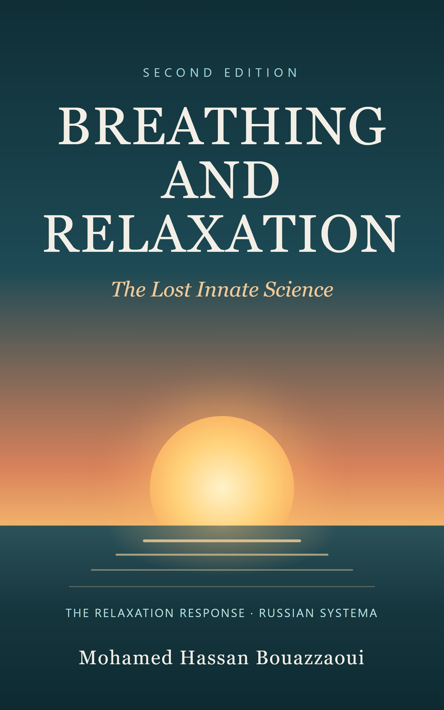

Breathing and Relaxation: The Lost Innate Science
Second edition, 2026
© 2026 Mohamed Hassan Bouazzaoui. All rights reserved. No part of this book may be reproduced or distributed without the written permission of the author, except for brief quotations in reviews.
Health disclaimer. This book is for educational purposes only. It is not medical advice and does not replace diagnosis or treatment by a qualified health professional. The practices described here are intended to complement, never to replace, medical care. Consult your doctor before starting breathing or relaxation practices if you are pregnant, or if you have a heart, lung, blood-pressure, neurological or psychiatric condition. Stop any exercise that causes dizziness, pain or distress.
About the examples. The people described in the illustrative examples are composites created for teaching purposes; they do not describe real patients.
In a world that moves at breakneck speed, stress has become an inescapable part of life. From the pressures of work and relationships to the constant barrage of information, our bodies and minds are often in a state of overdrive. Chronic stress takes a toll on our health and is associated with a wide range of conditions, from hypertension and irritable bowel syndrome (IBS) to autoimmune disorders and mental health challenges.
But what if there were a simple, scientifically studied way to counteract the effects of stress? This is where the work of Dr. Herbert Benson comes in. In the 1970s, Dr. Benson, a Harvard-trained cardiologist, described the Relaxation Response: a natural, innate mechanism that counteracts the stress response and promotes deep relaxation. His research showed that practices such as meditation, prayer and controlled breathing could elicit this response, with measurable effects on the body.
At the heart of the Relaxation Response is breathing. Breathing is unique in that it is both an automatic and a voluntary function. By consciously changing the way we breathe, we can influence our nervous system and shift from the fight-or-flight response to a state of calm and balance. This connection between breath and relaxation is central to many traditional practices, including yoga, tai chi and the Russian martial art of Systema.
Systema, which translates as "the system," is a holistic approach to movement, breathing and relaxation. Developed in Russia, it emphasizes natural, effortless breathing as the foundation of physical and mental resilience. Its techniques are designed to reduce tension, sharpen focus and preserve calm even in high-stress situations.
This book explores the science behind the Relaxation Response and the art of Systema breathing. It offers practical tools to strengthen self-control, improve well-being and support people living with chronic diseases. Whether you want to manage stress, support your health or simply live a more balanced life, the practices in this book can help you tap into the power of calm. The book ends with a 7-day starter plan so that you can begin practicing today.
What exactly happens inside our bodies when we experience stress? To understand this, we must look at the physiology of stress, and in particular at the fight-or-flight response, a mechanism that evolved to help us survive in the face of danger.
The fight-or-flight response is an automatic physiological reaction to perceived threats, whether physical, emotional or psychological. It is orchestrated by the sympathetic nervous system, a branch of the autonomic nervous system that prepares the body to confront danger or flee from it. When the brain perceives a threat, it sends a distress signal to the hypothalamus, which activates the sympathetic nervous system.
This activation triggers a cascade of hormonal changes, most notably the release of adrenaline (epinephrine) and cortisol by the adrenal glands. Adrenaline increases heart rate, raises blood pressure and boosts energy by stimulating the breakdown of glycogen into glucose. Cortisol, often called the "stress hormone," increases the availability of glucose and temporarily suppresses functions that are not immediately needed in a life-threatening situation, such as digestion and parts of the immune response.
In the short term, the fight-or-flight response is highly adaptive. It sharpens our senses, increases our strength and speed and prepares us to deal with immediate threats. Problems arise when this response is activated too often or for too long. Chronic stress, the persistent activation of the fight-or-flight response, can have lasting effects on the body.
When the body is repeatedly flooded with stress hormones, health can suffer. Sustained stress is associated with higher blood pressure, which strains the cardiovascular system. It is also linked to digestive complaints such as irritable bowel syndrome, and the long-term dysregulation of the immune system can make the body more susceptible to infections and may aggravate autoimmune disorders, in which the immune system attacks the body's own tissues.
The fight-or-flight response is not only a hormonal reaction; it also involves key brain structures. The amygdala, an almond-shaped cluster of nuclei deep within the brain, plays a crucial role in processing emotions, particularly fear. When the amygdala detects a threat, it signals the hypothalamus, which activates the sympathetic nervous system.
The prefrontal cortex, the part of the brain responsible for decision-making and rational thought, helps modulate this response. Ideally, it regulates the amygdala and allows us to assess whether a perceived threat is real. Under chronic stress, however, this regulation can weaken, leading to exaggerated stress reactions.
Chronic stress creates a cycle that can be difficult to break. Research suggests that prolonged stress can affect brain structure and function, including the hippocampus, a region involved in memory and emotion regulation. This can make it harder to regulate emotions, which in turn feeds the stress response.
Chronic stress can also encourage unhelpful behaviors such as overeating, substance use and social withdrawal. These behaviors create new stressors and keep the cycle going.
Understanding the physiology of stress is the first step toward breaking this cycle. In the next chapter, we will explore Dr. Herbert Benson's discovery of the Relaxation Response, the biological opposite of the stress response. By learning to activate it, we can counteract the harmful effects of chronic stress and support our overall well-being.
In the late 1960s and early 1970s, Dr. Herbert Benson, a cardiologist and researcher at Harvard Medical School, studied the physiological effects of meditation. He identified a natural, innate response of the body that he called the Relaxation Response, the biological opposite of the fight-or-flight response (Benson, Beary & Carol, 1974). His work provided a scientific framework for understanding relaxation, and practical tools for harnessing its benefits.
The fight-or-flight response, driven by the sympathetic nervous system, prepares the body to face immediate threats by increasing heart rate, blood pressure and stress hormones. The Relaxation Response, by contrast, is associated with the parasympathetic nervous system, which promotes calm and restoration. When it is activated, heart rate and breathing slow down, blood pressure decreases, muscles release their tension and the body's oxygen consumption drops.
Dr. Benson showed that the Relaxation Response is not merely the absence of stress but an active physiological state that can be deliberately elicited. This demonstrated that people could actively counteract the effects of chronic stress by engaging in specific practices.
Dr. Benson described simple elements that help elicit the Relaxation Response. They can be applied through many practices, including meditation, prayer, yoga, or even repetitive activities such as jogging or knitting. In his later work he emphasized the first two as the essential steps:
Dr. Benson's work was followed by decades of studies on relaxation and breathing practices. The main effects reported include:
The Relaxation Response is now widely recognized as a tool for stress management. Related approaches are used in programs such as mindfulness-based stress reduction (MBSR) and cognitive-behavioral therapy (CBT), and in clinical settings to support people living with chronic illnesses. It is accessible to everyone, regardless of age, fitness level or background, and requires no special equipment.
In the next chapter, we will explore the central role of breathing in activating the Relaxation Response.
Breathing is one of the most fundamental and powerful tools we have for influencing our physiological and emotional states. It is an automatic process controlled by the brainstem, yet it can also be consciously regulated. This dual nature makes it a gateway to the Relaxation Response.
The autonomic nervous system (ANS) regulates the body's involuntary functions, such as heart rate, digestion and breathing rate. It has two main branches: the sympathetic nervous system, which governs the fight-or-flight response, and the parasympathetic nervous system, which promotes rest, relaxation and recovery. Controlled breathing is one of the most direct ways to engage the parasympathetic branch.
Slow breathing, particularly with a longer exhalation, engages the vagus nerve, the main nerve of the parasympathetic system. The vagus nerve acts as a communication highway between the brain and the body, helping to slow the heart and promote relaxation. This is why diaphragmatic breathing, in which the breath is drawn deep into the abdomen, is so effective at reducing stress.
Research shows that slow breathing, around six breaths per minute, increases heart rate variability (HRV), a marker of the body's ability to adapt to stress (Russo, Santarelli & O'Rourke, 2017; Zaccaro et al., 2018). Higher HRV is associated with better emotional regulation and cardiovascular health.
The breath is often described as a bridge between the body and the mind. Slow, rhythmic breathing sends signals of safety to the brain, and paying attention to the breath brings us back to the present moment, breaking the cycle of rumination and worry that often accompanies stress. Over time, this mindful awareness of the breath helps us observe thoughts and emotions without being overwhelmed by them.
The relationship works in both directions. When we are anxious or angry, our breathing becomes shallow and rapid; when we are calm, it becomes slow and deep. By becoming aware of this connection, we can use the breath to regulate our emotions and create a positive feedback loop of calm.
Studies of practices such as diaphragmatic breathing and slow paced breathing report that they can:
In the next part of this book, we will explore the Russian Systema approach to breathing and relaxation, with its unique techniques and philosophy for achieving calm and resilience.
Systema is often described as a Russian martial art of "combat and healing." It is a holistic practice that emphasizes natural movement, relaxation and breath control. Unlike many martial arts built on rigid techniques and fixed forms, Systema is fluid and adaptable, designed to work with the body's natural instincts and rhythms.
Systema draws on Russian martial traditions and on training developed for military and special-forces units, where a practical method was needed for high-stress, unpredictable situations. In its modern form it was taught and popularized from the 1990s onward, notably by Mikhail Ryabko and Vladimir Vasiliev, and it has since spread worldwide. Beyond self-defense, Systema is presented by its teachers as a way of life that integrates physical training, breathing, relaxation and awareness.
At its core, Systema rests on four principles, often called the Four Pillars: breathing, relaxation, posture and movement. They are interconnected and form the foundation of every Systema practice. Its philosophy holds that true strength comes from harmony with oneself and one's environment: by cultivating awareness, adaptability and calm, practitioners learn to respond to challenges with ease and efficiency, in combat, in daily life or under stress.
Although Systema originated in combat, its principles apply to everyday life. Its emphasis on breathing, relaxation, posture and movement makes it an effective tool for managing stress, supporting physical health and building emotional resilience.
Systema is also rooted in self-awareness. Practitioners learn to listen to their bodies, to recognize tension and stress, and to release them through breath and movement. This awareness extends to emotions and reactions, making Systema not only a martial art but also a path to personal growth.
Today, Systema is practiced by people from all walks of life: martial artists, athletes, health professionals and people simply looking for stress relief. Its gentle, mindful approach to movement can suit people recovering from injury or living with chronic pain, provided it respects the body's limits and, where needed, medical advice. In high-stress professions such as law enforcement, the military and emergency response, its focus on breathing and relaxation helps people stay calm and make better decisions under pressure.
Breathing is the foundation of Systema, the bridge between body, mind and emotions. It is not only a physiological process but a tool for cultivating calm, focus and resilience. This chapter explores nasal and diaphragmatic breathing, presents key Systema techniques and explains how they reduce tension and improve focus.
1. Walking breath ladder. Walk at a normal pace. Inhale through the nose for one step and exhale through the mouth for one step. Then inhale for two steps and exhale for two, then three and three, up to a comfortable maximum (for example 8), and come back down to one. If you run out of breath, simply return to a lower step.
2. Burst breathing. After an effort, or when you feel pain or a surge of tension, breathe with short, quick bursts: brief sniffs in through the nose and short puffs out through slightly pursed lips, as if blowing out a candle. Continue until your breathing and heart rate settle, then return to slow nasal breathing.
3. Breath-led movement. Choose a simple movement, such as a slow squat. Let the breath lead: start the inhale, then begin to move down; start the exhale, then rise. Keep the movement slow enough that the breath is never forced. The goal is not strength but staying relaxed while moving.
Relaxation is a core principle of Systema, reflecting the belief that true strength comes from staying calm and adaptable in the face of challenges. Systema relaxation practices release physical tension, cultivate awareness and promote a deep sense of inner peace.
Progressive muscle relaxation (PMR) systematically releases tension from the body. In Systema, it is often combined with breathing:
PMR increases body awareness, making it easier to recognize and release tension before it becomes chronic. Avoid tensing any area that is injured or painful.
Mindfulness means paying attention to the present moment without judgment; awareness is the ability to perceive one's inner and outer environment. Systema cultivates both through:
Systema is more than a martial art: it is a way of living with awareness, resilience and ease. In the next part, we will see how to combine its practices with the Relaxation Response for a holistic approach to well-being.
In today's fast-paced world, emotional resilience is a critical skill. The ability to regulate emotions, manage stress and keep self-control has a real impact on mental and physical health. By combining the Relaxation Response with Systema's breathing and relaxation techniques, you can build powerful tools for emotional resilience.
The following examples are composites created to illustrate how these practices can be used. They are not reports of real patients.
Situation. John, 35, has frequent outbursts of anger at work and at home, which are damaging his relationships.
Practice. He practices the Relaxation Response every morning with a simple word, and uses continuous breathing in tense situations.
What changes. Over time he learns to notice the early signs of anger, such as a racing heart and tight muscles, and to calm himself with his breath before his emotions escalate.
Situation. Maria, 28, a graduate student, lives with persistent worry that disturbs her studies and her sleep.
Practice. She practices diaphragmatic and wave breathing for 10 to 15 minutes a day, silently repeating the word "calm."
What changes. After a few weeks she feels less overwhelmed, uses wave breathing to stay focused during exams, and sleeps better.
Situation. David, 42, a firefighter, experiences panic during high-stress interventions.
Practice. He trains Systema breathing, with continuous breathing and short, controlled breath holds during training, and practices the Relaxation Response off duty.
What changes. He feels more composed during emergencies and makes clearer decisions under pressure.
Breathing practices can support emotional well-being, but they do not replace professional care. If anger, anxiety, fear or low mood are intense, persistent or affect your daily life, talk to a doctor or a mental health professional.
Chronic diseases such as inflammatory bowel disease (IBD), fibromyalgia and cardiovascular disease are often aggravated by stress. Stress worsens symptoms, and symptoms in turn increase stress. Used alongside medical treatment, the Relaxation Response and Systema breathing can help people improve their quality of life.
Never stop or change a treatment without your doctor's advice. Tell your care team about the practices you use, especially if you have a heart or lung condition.
Bringing the Relaxation Response and Systema into your daily routine can change the way you experience stress. This chapter offers a simple step-by-step approach.
| If you are… | Try this |
|---|---|
| A busy professional | 1 to 2 minutes of diaphragmatic breathing at your desk; wave breathing while walking between meetings. |
| A parent | Mindful breathing while your child naps or plays; simple breathing games with children. |
| A senior | Gentle movements and breathing adapted to your mobility; guided imagery or PMR for relaxation and pain. |
| A student | 4-7-8 breathing before exams or presentations; a few minutes of Systema breathing during study breaks. |
Athletes, first responders and military personnel face situations that demand peak physical and mental performance. The ability to manage stress, recover quickly and stay focused can make the difference between success and failure, and sometimes between life and death.
The mind-body connection is increasingly recognized in medicine. As research continues, breathing and relaxation practices are finding a growing place alongside conventional care.
Throughout this book, we have explored the impact of the Relaxation Response and Systema breathing on physical, mental and emotional well-being: from the physiology of stress to high-stress professions and life with a chronic disease. By engaging the parasympathetic nervous system and reducing stress, these practices help us take an active part in our health and meet life's challenges with resilience.
The journey toward a healthier, calmer and more fulfilling life begins with a single breath. Here is how to take the first step:
The integration of these practices into medicine, education and community health holds great promise: a world where people are empowered to care for their health, where stress is managed early, and where well-being is a priority for all. The power to transform your life lies within you. It begins with a breath, a moment of stillness, and a commitment to nurturing your body, mind and spirit. The journey starts now.
Ten to fifteen minutes a day are enough to begin. Tick each day when it is done: consistency matters more than duration.
| Day | Morning (5–10 min) | During the day | Evening (5 min) |
|---|---|---|---|
| 1 | Diaphragmatic breathing, 5 min | 3 slow breaths before each meal | 4-7-8 breathing, 4 cycles |
| 2 | Diaphragmatic breathing, 7 min | Continuous breathing while walking | Body scan |
| 3 | Relaxation Response with a word, 10 min | 1 minute of box breathing before a task | 4-7-8 breathing |
| 4 | Walking breath ladder, up to 6 steps | Mindful pause: notice and release tension | Progressive muscle relaxation |
| 5 | Relaxation Response, 10 min | Wave breathing during a simple effort (stairs, carrying) | Gratitude: 3 things |
| 6 | Breath-led squats, 2 × 5 slow repetitions | Burst breathing after an effort | Guided imagery with slow breathing |
| 7 | Your favorite practice, 10–15 min | Note which moments you needed your breath most | Plan your practice for next week |
After a week, keep what worked best for you and practice it daily. Many people notice the difference within two to four weeks of regular practice.
Mohamed Hassan Bouazzaoui wrote this book to share simple, science-informed tools that anyone can use to breathe better, manage stress and live more calmly. It brings together the research on the Relaxation Response and the practical wisdom of Systema.
Guided exercises, updates and the other language editions of this book are available on the book's website. Questions and feedback are always welcome through the contact page.